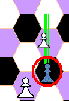
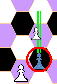

Les regles són molt semblants a les dels escacs ortodoxes, adaptant els moviments a l'escaquer hexagonal (hexcaquer). També és cert que n'hi ha algunes diferències i noves peces, però aquest resum sintetitza breument els moviments en l'hexcaquer, les noves peces, i altres diferències específiques.
Els escacs hexagonals varen ser inventats per Władysław Gliński l'any 1936, tot i que fan servir un hexcaquer més petit i unes regles una mica diferents de les de C'escacs. Foren molt populars en les dècades de 1970 i 1980 en el Regne Unit i en Polònia.
Posició inicial de les peces
L'hexcaquer forma un hexàgon regular amb vuit hexcacs en cada costat, i en té tres colors diferents: blanc, negre i color, amb l'hexcac central de color.
Rei i Dama blancs es posicionen en hexcacs blancs, i Rei i Dama negres prenen posicions en hexcacs negres. Els reis es posicionen enfrontats, en la columna G: el Rei blanc en la seva dreta, i el Rei negre en la seva esquerra.
Les peces
- 27 peces per jugador:
- 11 Peons

- 4 Elefants

- 3 Alfils
- 2 Cavalls

- 2 Pegassos

- 2 Rocs (Torres)

- Víbria (Drac)

- Dama

- Rei


Valoració de les peces
| Peça | Valor |
|---|---|
| Peó
|
1 |
| Elefant
|
2 |
| Alfil | 3 |
| Cavall
|
4 |
| Pegàs
|
8 |
| Roc (Torre)
|
10 |
| Víbria (Drac)
|
15 |
| Dama
|
16 |
Primeres impressions
És un gran hexcaquer de 169 hexcacs. En té tres colors, i es requereixen tres alfils.
-
La potència de l'alfil disminueix notòriament respecte dels escacs ortodoxos.
-
Incorpora la Víbria (Drac), que combina els moviments del Roc i el Cavall, i dos Pegassos, que combinen els moviments de l'Alfil i el Cavall.
-
Augmenta la mobilitat dels peons, però, tot i això, la seva potència disminueix respecte dels escacs ortodoxos.
-
La pèrdua de potència dels peons és deguda a la ineficàcia de les estructures dels peons en els escacs hexagonals.
-
S'incorpora la peça de l'Elefant per donar suport a les estructures dels peons.
-
-
Inicialment les peces es troben protegides, excepte els dos peons dels flancs i els dos Rocs.
Moviments: ortogonals, diagonals i de cavall
Fila: direcció ortogonal
Dos hexcacs adjacents sempre seran de diferent color. Successius hexcacs adjacents per un costat formen una fila.
Cada hexcac pertany a tres files diferents: una fila longitudinal (que anomenarem columna) i dues files obliqües. En total n'hi ha sis direccions ortogonals diferents, dues direccions per a cada fila.
Les direccions ortogonals corresponen a les direccions del moviment de les torres.
Línia: direcció diagonal
Tots els hexcacs d'una mateixa línia són del mateix color, però, a diferència d'un escaquer quadrat, els vèrtexs dels hexcacs d'una línia no s'hi toquen.
Les línies travessen els hexcacs pel centre i dos dels seus vèrtexs. Cada hexcac el travessen tres línies diferents: dues línies obliqües, i una línia transversal. En total, des d'un hexcac n'hi ha sis direccions diagonals diferents, dues direccions per a cada línia.
Les direccions diagonals corresponen a les direccions del moviment dels alfils; n'hi ha tres colors diferents, i se'n fan servir tres alfils, un per a cada color.
Salt de cavall

- El salt del cavall consisteix en la combinació d'un moviment d'una casella en diagonal i una en ortogonal; cada direcció triada en diagonal admet dos direccions alternatives en ortogonal; en total existeixen dotze moviments possibles.
- El moviment de cavall no pot impedir-se situant una peça entremig; es diu que
salta
. - Sempre canvia el color de l'hexcac destí respecte el color de l'hexcac d'origen.
- El salt de cavall el poden fer les peces: Cavall, Pegàs i la Víbria (Drac).
Cavalcada
- La cavalcada és el moviment de doble salt de cavall (només dos salts), sense captura.
- El segón salt és anàlog al primer, en la mateixa direcció diagonal i la mateixa direcció ortogonal, quedant determinat pel salt inicial: per a cada salt de cavall només n'hi ha una cavalcada possible.
- L'hexcac de destí ha de ser lliure, doncs no es poden fer captures amb aquest moviment.
- També l'hexcac intermedi, el salt de cavall inicial, ha de ser lliure.
- Sempre canvia el color de l'hexcac destí respecte el color de l'hexcac d'origen.
- Només el Cavall pot fer el moviment de Cavalcada.
Moviment de les peces
-
Roc (Torre)
Moviment en les sis direccions ortogonals, per les files.
-
Alfil
Moviment en les sis direccions diagonals, per les línies.
Sempre es manté en el seu color; en els escacs hexagonals l'alfil és una peça feble, notablement més feble que el cavall.
-
Cavall
Es distingueixen dos moviments:
- Salt de cavall, com s'ha descrit; n'hi ha dotze possibles.
- Cavalcada, com s'ha descrit:
- Encadenament de de dos salts de cavall iguals; n'hi han dotze moviments possibles, un per a cada moviment de cavall.
- L'hexcac intermedi on es fa el primer salt ha de ser lliure.
- No es permet capturar peces en una cavalcada; l'hexcac final ha de ser lliure.
En total en té vint-i-quatre moviments possibles, però només en els dotze moviments de cavall simples hi pot capturar. Sempre canvia el color de l'hexcac destí respecte el color de l'hexcac d'origen, tant en els moviments senzills, com en el moviment doble de cavalcada.
-
Pegàs
El cavall alat pot moure en diagonal, per les línies com un alfil, o fer un salt de cavall.
No pot fer el moviment de cavalcada.
Combina els moviments de l'alfil i el cavall (sense incloure-hi la cavalcada).
En els escacs hexagonals la seva potència és menor a una torre, i es considera una peça mijana, superior a les peces menors, però sense arribar a la potència d'una peça major.
-
Víbria (Drac)
El drac pot moure en ortogonal, per les files, o fer un salt de cavall.
No pot fer el moviment de cavalcada.
Combina els moviments de la torre i el cavall (sense incloure-hi la cavalcada).
La seva potència es similar a la dama.
-
Dama
Moviment en les sis direccions ortogonals i en les sis diagonals; mou tant per les files com per les línies.
Combina els moviments de la torre i l'alfil.
-
Elefant
El moviment dels elefants és com en els escacs orientals (Sittuyin, ASEAN-Chess...): en les direccions diagonals en davant o en darrera, o avançant un o dos hexcacs; en total sis moviments.
No pot moure en diagonal cap als costats, i ortogonalment només en davant. En total són sis moviments; els moviments de l'elefant dibuixen les quatre potes i la trompa.
És una peça força lenta, que permet construir estructures consistents de peons, i la seva potència podem dir que és considerablement menor a un alfil, lent i amb poca maniobrabilitat; la seva funció és donar suport als peons.

Moviments de l'elefant -
Peó
Els moviments del peó són diferents si captura o si fa un moviment a un hexcac buid; a més, existeixen moviments especifics per a algunes situacions.

Moviments del peó
Moviments sense captura- El peó pot moure en davant un o dos hexcacs (moviment doble). El moviment doble es pot fer en qualsevol posició de l'hexcaquer.
- El peó també pot moure un hexcac ortogonalment oblic, a qualsevol dels dos hexcacs adjacents oblics en davant en 60º.
- En total té un màxim de quatre moviments sense captura, sense comptar el possible moviment inicial addicional.
Moviments de captura
Per capturar el peó mou obliquament en davant en diagonal, a qualsevol dels dos hexcacs de davant seguint les línies de 30º. És a dir, en els dos hexcacs davant seu del mateix color que l'hexcac on es troba posicionat.
Moviments especials
Moviments especials
Moviment inicial
Des de les posicions inicials els peons poden fer un moviment triple en davant per la columna, amb l'excepció de la posició en la columna central (columna 'F') i les de les columnes dels flancs (columna 'A' i columna 'L').
Un peó pot haver avançat fins a un d'aquests vuit hexcacs inicials, donada la seva capacitat de moviment ortogonal; en mantindrà la capacitat de fer el moviment triple mentre es trobi en un dels vuit hexcacs inicials que l'hi permeten, tot i haver estat mogut.
És a dir: per a cada jugador n'hi ha vuit posicions des de les que un peó pot fer un moviment triple, i tres peons que mai podran fer un moviment triple.
Moviments especials
Promoció
Quan un peó arriba a un dels quinze hexcacs de la banda de l'oponent promocionarà de manera obligatòria, però la peça a què promociona ha de ser una peça recuperable ja capturada.
-
Són peces recuperables: Dama, Víbria (Drac), Rocs (Torres), Pegassos, Cavalls i Alfils, però s'ha de considerar el color de l'Alfil, doncs no es poden tenir en joc dos Alfils del mateix color; només és recuperable un Alfil del mateix color que ha estat capturat.
No són recuperables els Elefants.
Moviments especials
Promoció forçada
Peó en espera de promoció
Sembla poc probable que no n'hi hagi cap peça recuperable capturada diponible per promocionar un peó, però si arribés el cas, el peó quedaria sense promoció, amb els moviments limitats per la seva situació en l'hexcaquer, fins que l'oponent capturi una peça vàlida per a la promoció, o bé el mateix peó sigui caprturat. Es diu que el peó queda en espera de promoció.
En el torn d'un jugador amb un peó en espera de promoció, immediatament després d'haver estat capturada d'una de les seves peces recuperables vàlida per a la promoció, i si no es troba en escac, la jugada obligatòriament consistirà en promocionar el peó que havia quedat en espera de promoció, sense fer cap altre moviment.
En el cas de trobar-se en situació d'escac, el moviment de promoció s'haurà de fer en la primera jugada en què el jugador no es trobi en situació d'escac, sempre sense fer cap altre moviment a més de la promoció.
Captures especials
Captura al pas
 
Captura al pas 
Posició inicial - Quan un peó que realitza un moviment doble o triple travessant un hexcac on podia haver estat capturat per un peó de l'oponent, pot ser igualment capturat.
- La captura al pas s'ha de fer inmediatament després del moviment doble o triple.
- El peó que realitza la captura queda posicionat en l'hexcac on hauria fet una captura normal, i el peó de l'oponent es retirat del joc, ignorant la posició a què havia avançat (un o dos hexcacs més endavant).
Captures especials
Captura del peó esquíu


Captura del peó esquíu 
Posició inicial Quan dos peons de diferent bàndol queden enfrontats, no queden retinguts, perquè en C'escacs els peons poden moure oblíquament. Però si un peó enfrontat amb un altre de l'oponent fa un moviment oblic per esquivar-lo, pot ser capturat ortogonalment pel peó de l'oponent que ha esquivat.
- Quan un peó enfrontat amb un peó de l'oponent, en la mateixa columna i hexcacs consecutius, fa un moviment oblic esquivant el peó de l'oponent, pot ser capturat amb un moviment ortogonal.
- El moviment de captura s'ha de fer inmediatament després del moviment esquiu del peó.
- La captura es fa ortogonalment, movent a la posició on es troba el peó de l'oponent. És l'única captura de moviment ortogonal que fan els peons.
Es pot arribar a donar el cas d'un peó que promociona fent un moviment esquiu evitant un peó de l'oponent amb qui estava enfrontat. Aquest cas només es pot donar en les columnes T, A, L, X, després de fer un moviment esquiu respectivament des de les columnes A, B, K, L. La captura del peó esquiu també aplica en aquest cas, i es capturarà la peça a què hagi promocionat el peó.
També en les columnes T, A, L, X es pot donar una captura al pas en el moment de la promoció; no en les altres columnes, doncs no poden tenir peons tan endarrerits. També en aquest cas es capturarà la peça a què hagi promocionat el peó.
-
Rei
Pot moure un únic hexcac ortogonalment o diagonalment; en total dotze moviments possibles.
- No es pot fer un moviment que deixi el rei amenaçat (en escac)
- Quan es troba amenaçat (en escac) s'ha de moure o moure una altra peça per evitar la amenaça.
- Si no existeix un moviment per evitar l'amenaça, és escac i mat, i s'ha perdut la partida.
Salt del Rei
Moviment inicial
Els cinc hexcacs destí del Salt del Rei possibles. El rei pot fer un únic moviment de cavall:
- Si el Rei no ha estat mogut en tota la partida.
- Si el Rei no es troba amenaçat (en escac).
- Li està permès capturar una peça en aquest moviment.
- La regla anterior li impedeix capturar una peça que li amenaça.
Es poden veure les regles del Salt del Rei més detalladament en un apartat específic disponible en una altra pàgina d'aquest mateix lloc web.
L'enroc
Moviment inicialEn C'escacs existeix un moviment d'Enroc, però no és un moviment fonamental per desenvolupar l'estratègia, i és convenient fer les primeres partides obviant aquesta regla, com es detalla més avall. En apartat de l'Enroc d'aquest lloc web, separat en una altra pàgina, es detallen les dues variants: l'enroc simple, amb un Roc, i l'enroc doble, fent servir ambdós Rocs.
- No s'ha de confondre amb el Salt del Rei.
- L'enroc també és un moviment principalment evasiu, però permet incorporar defensa amb la Torre.
Jugar sense Enroc
Recomanació per a les primeres partides- Es recomana jugar sense Enroc per iniciar-se en el joc.
- S'ha d'acordar a l'inici de la partida.
- Si es juga sense Enroc, el Salt del Rei es mantindrà, però sense permetre al Rei fer captures amb aquest moviment.
Regles
Taules
Les taules, o empat entre tots dos contendents, en un torneig representa 1 punt per a cada jugador, i es produeixen:
- Per acord mutu entre els contendents, o bé si els jugadors no tenen cap peó i el material és insuficient per aconseguir fer mat a l'oponent.
- Quan la mateixa
posició es repeteix cinc vegades, no necessàriament consecutives.
El cas d'escac
continu generalment cau en aquesta categoria.
Un jugador pot exigir taules si es repeteix tres vegades la mateixa posició.
- Per esgotament
de moviments: Després de 75 moviments consecutius de cada jugador
(setanta-cinc jugades)
sense cap captura ni moviment de peó.
Un jugador pot exigir taules si es donen 50 jugades consecutives sense cap captura ni moviment de peó.
Les taules i la victoria per ofegat
En C'escacs l'ofegat és una victòria per la mínima. Per això, si parlem de competició:
- La victoria concedeix 3 punts per al vencedor.
- Les taules donen 1 punt per a cada jugador.
- Si un jugador ofega el rei de l'altre rebrà 2 punts, i el jugador amb el rei ofegat 1 punt.
Tot i això, és força extrany trobar un cas d'ofegat en C'escacs.
Regles generals
Peça tocada, peça moguda
- Si una peça en joc es toca, s'ha de moure.
- Un moviment fet no es pot rectificar una vegada s'ha deixat la peça moguda en l'escaquer, però un moviment invàlid o il·legal s'ha de rectificar inmediatament.
- Condicions que fan perdre una partida a un jugador:
- Desordena la posició de les peces en joc de l'hexcaquer.
- No accepta reprendre un joc interromput en un temps raonable.
- Quan es fa servir rellotge i excedeix el temps.
- Quan no compleix un requeriment legal de l'oponent.
- Si es nega a complir les regles.
Finals
- El Rei i un Peó contra un Rei solitari acaba en la coronació del Peó, sempre que el Rei sigui prou a prop per defensar-ho.
- El Rei amb una peça major (Dama, Víbria o Roc) poden fer escac mat a un Rei solitari.
- En un final, quan
tots els peons han estat capturats, i a un bàndol li queda només
el Rei,
en tant que l'altre no té peces majors:
- Es requereix com a mínim el Rei amb una peça mitjana (Pegàs) i una peça menor (cavall o alfil) per fer mat a un Rei solitari.
- Si el jugador amb més material
només té el
Rei solitari,
o el Rei amb una
Peça menor,
o bé el Rei amb un
Elefant, no és
possible el Mat, i es diu que
el jugador té
material insuficient
, i la partida és taules. - Si el jugador amb més material només té
el Rei amb una
peça mitjana
(Pegàs)
o el Rei amb dues
peces menors, o el
Rei amb una
peça menor i un
Elefant, o quan el
Rei només compta
amb Elefants, només existeixen
rares i comptades posicions en què el mat és possible, però amb aquestes peces no es pot
encaminar el Rei a una posició de mat.
- Si la posició no permet vislumbrar el mat
en cinc jugades també seria un cas de
material insuficient
, però es tractarà com a taules pactades, o, en cas contrari, si els jugadors no ho pacten, s'arribarà a taules esgotant els moviments, aplicant la regla de les cinquanta jugades (cent moviments), o la regla de les setanta-cinc jugades (cent cinquanta moviments).
- Si la posició no permet vislumbrar el mat
en cinc jugades també seria un cas de
Indicacions addicionals referents als finals
- El Rei i un Roc (Torre) vencen un Rei i un Alfil o un Rei i un Cavall.
- El Rei i una Dama vencen un Rei i un Pegàs.
- La Víbria (Drac) i la Dama tenen aproximadament la mateixa potència. La Dama és preferible contra el Pegàs, però la Víbria (Drac) és molt millor contra el Roc (Torre).
- El Rei i una Dama no vencen un Rei amb un Roc (Torre).